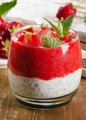

What do you like to eat ?
choose from carousel slide
1-خمس وصفاتٍ رائعة لتحضير أطباق التّحلية المُثَلّجة باستعمال بذور الشيا مع الكرز المُبرََّد هي أبسط وصفةٍ يمكنك العثور عليها حاليًا لتحضير طبق التّحلية. إذ سيستغرق منكَ تحضير هذا الطبق اللذيذ 5 دقائق فقط من عملية المزج قبل وضعه في الثلّاجة وتركه هناك إلى أن يبرد ويحين وقت تقديمه. الوصفة الآتي ذكرها تكفي 4 أفراد، ولكنّكَ تستطيع مضاعفة مقادير المكوّنات لتقديمها إلى 8 أفراد. هي وصفة نباتية ولا تحتوي على أيّ سكرٍ مضاف، كما أنّ للكرز دورٌ كبيرٌ يلعبه في توفير الحلاوة بشكلٍ طبيعي يُغنيك عن استعمال السكّر.
2-دوّامة البرتقال والفانيليا
3-كريمة الفراولة الرائعة
4-موسية الشوكولاتة ببذور الشيا وجوز الهند
5-تحلية الرمان المُتبّل ... لمعرفة المزيد عن الوصفات أطباق التّحلية المُثَلّجة
جمال طعم المهلبيه باللبن
تعتبر المهلبية من الحلويات الشعبية التي تعدها مختلف الدول العربية منذ القديم وحتى وقتنا هذا، وذلك بسبب طعمها المميّز وفوائدها العديدة، ومناسبتها للأيام العادية والاحتفالات أيضاً، وتتألف بشكلٍ أساسي من الحليب، وفي هذا المقال سنتحدث عن إعداد المهلبية بالحليب وبالنشا والبرتقال بالمكونات والخطوات.... معرفة المزيد عن الوصفة مهلبية بالحليب
ا يعد الماكرون أحد أشهر أنواع الحلوى الفرنسية التى ظهرت منذ أكثر من 1500 سنة، كما أن الأطفال يعشقونها نظراً لكونها تتميز بألوان جذابة وملفتة، فضلاً عن أن مكونتها تعد صحية ومفيدة فيمكنك أن تقدميها إلى أطفالك وأنتِ مطمئنة، كما يمكنك أن تنوعى بين الألوان الطبيعية المفيدة وبين الشكولاتة، وبحسب موقع sugarywinzy نقدم لكِ طريقة عمل الماكرون على الطريقة الفرنسية... لمعرفة المزيد من الوصفة
الماكرون الفرنسى- 
-